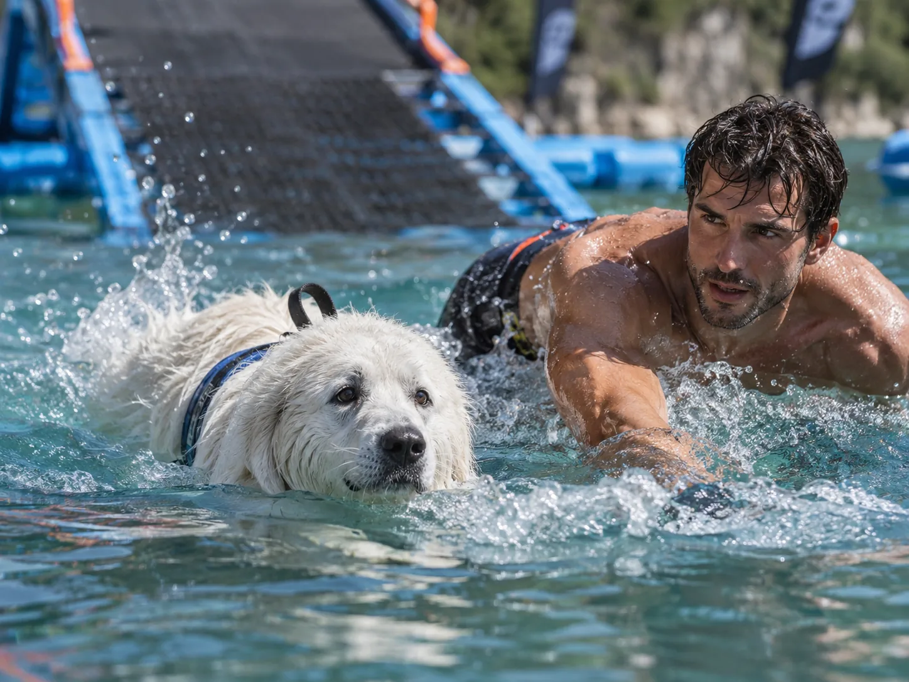
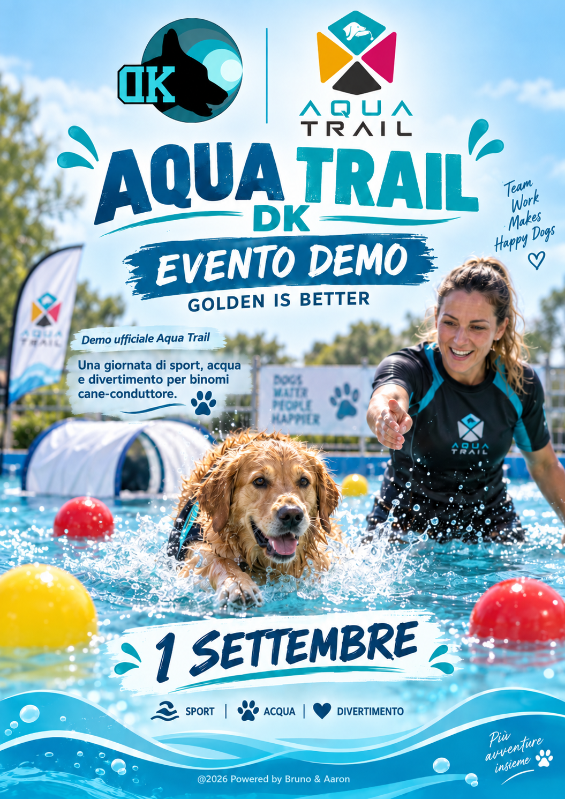
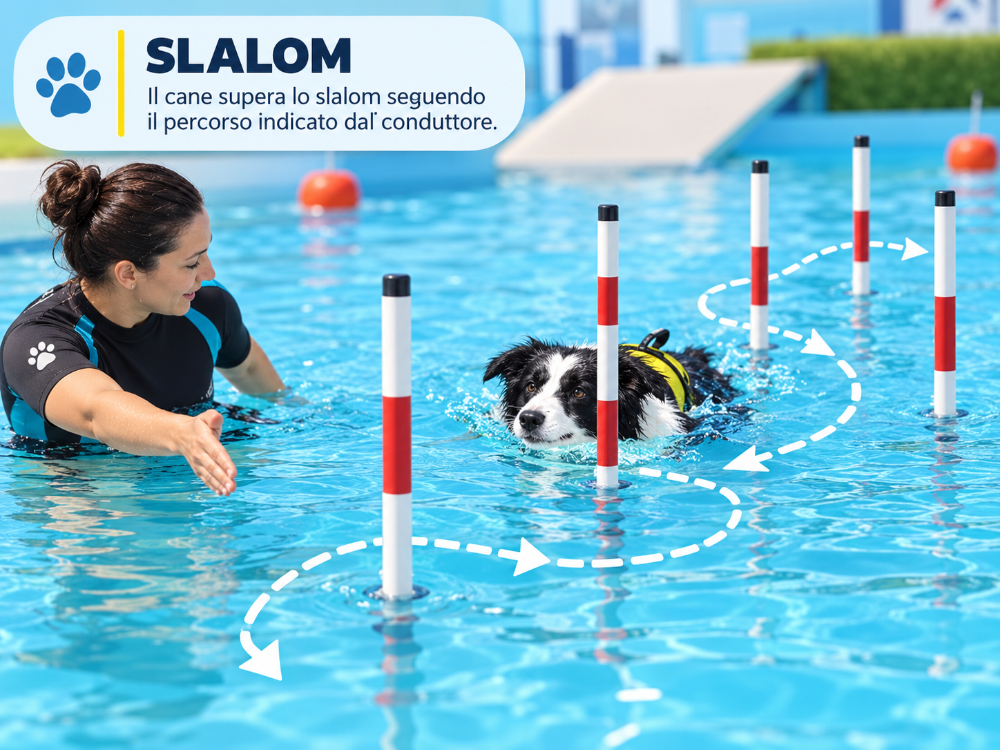
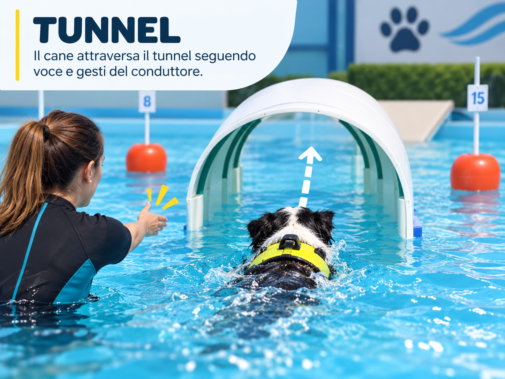
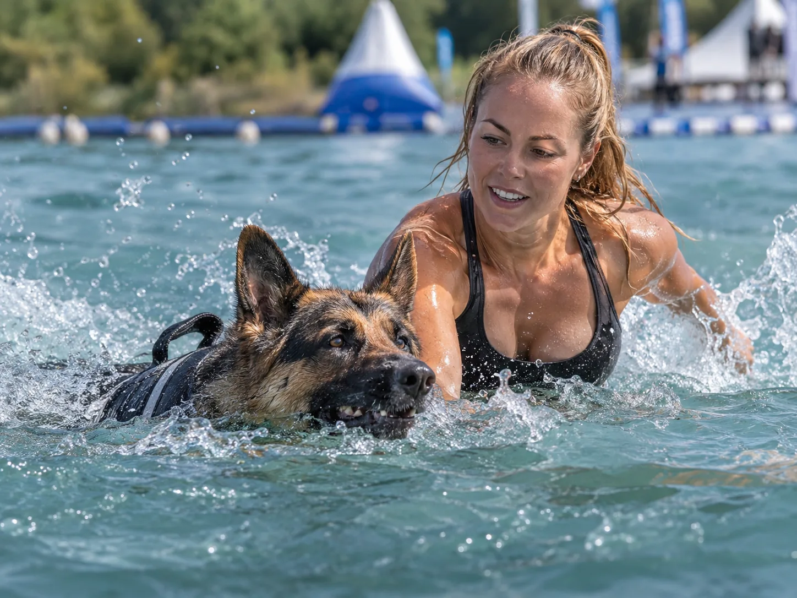

Cos’è l’Aqua Trail?
È una disciplina acquatica in cui il binomio affronta un percorso in acqua con tecnica, controllo, velocità e collaborazione.
🐾 Il protagonista è sempre il BINOMIO: 1 conduttore + 1 cane

Una panoramica chiara delle regole base, dei TPS e del percorso di gara.
Stessa passione, più lontano ♥È una disciplina acquatica in cui il binomio affronta un percorso in acqua con tecnica, controllo, velocità e collaborazione.


BOA
SLALOM
TUNNEL
SPEED RETRIEVEIl giudice costruisce il percorso rispettando il numero di ostacoli previsto per ogni prova.
Può cambiare da un evento all’altro. Un nuovo binomio parte sempre dalla OPEN; il tempo ottenuto viene confrontato con le soglie TPS dell’evento.
Si ottiene dopo 3 eventi con lo stesso TPS, anche non consecutivi. Un TPS certificato può anche essere declassato, se concordato con il giudice.
Per accedere alla prova successiva bisogna superare quella precedente.
La prova di partenza obbligatoria per i nuovi binomi.
Più tecnica, continuità e precisione.
Possono comparire vincoli di conduzione.
La prova finale; Speed Retrieve obbligatorio.
I tempi TPS vengono configurati per ogni evento e per ciascuna prova. OPEN assegna il TPS provvisorio ai nuovi binomi; quel TPS resta invariato fino alla fine dell’evento.
Ogni binomio dispone di 3 penalità complessive per la singola gara. Le penalità si accumulano da OPEN ad ADVANCE, MASTER e SPEED all’interno della stessa Competition e non si azzerano passando alla prova successiva. Se un evento contiene due gare indipendenti, il conteggio è separato per ciascuna gara; se è un’unica gara distribuita su più giornate, il conteggio prosegue tra le giornate.
Ogni prova genera un podio separato per TPS1, TPS2 e TPS3. Il criterio automatico principale è il minor tempo ufficiale; a parità perfetta il sistema mantiene l’ex aequo finché non esiste una diversa regola esplicita.
Ideali per chi è alle prime esperienze.